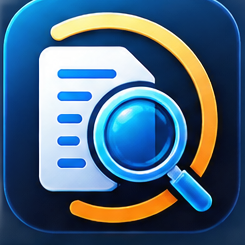

Explore files too large for Excel or Notepad.
FileLens helps developers, support engineers, SREs, analysts, and data teams search huge logs and work with large CSV/TSV files directly on their Windows PC.

FileLens
Huge Log + CSV Explorer
Built for large-file troubleshooting and data work
FileLens avoids the usual “load everything into a spreadsheet or editor” workflow and focuses on operations that stay practical as files grow.
Large log search
Tail logs, search one or multiple strings with AND/OR matching, use regular expressions, and highlight WARN/ERROR entries.
Excel-style CSV filters
Filter CSV/TSV data from the column headers, combine multiple filters, and inspect only the records you need.
SQL & profiling
Run DuckDB SQL directly against CSV files and profile column types, blanks, distinct values, ranges, and averages.
Sort & sample
Sort large CSV data, take random or first-N samples, and keep long-running operations cancelable.
Split, merge, deduplicate
Break large files into manageable parts, merge compatible datasets, and remove duplicate rows using selected keys.
Transform safely
Export selected columns and convert CSV to Parquet using temporary outputs so source files are protected from accidental overwrite.
Your files stay on your computer.
FileLens is designed as local-first desktop software. Log, CSV, TSV, JSONL, and Parquet data opened in the application is processed locally rather than uploaded to a FileLens cloud-processing service.
Simple software licensing
FileLens is downloadable Windows software, not a hosted SaaS subscription.
FileLens Free
- Open and tail large log/text files
- Basic log search
- CSV/TSV preview
- CSV filters
FileLens Pro
- Multi-string and regex search
- DuckDB SQL and CSV profiling
- Sort, split, merge and deduplicate
- Column export and sampling
- CSV → Parquet conversion
- License intended for one purchaser on up to 3 devices
Customer support
Questions about FileLens, licensing, compatibility, or refunds can be sent to support@advoryn.com.
For payment-related questions after purchase, customers may also receive support options through the payment provider shown at checkout.